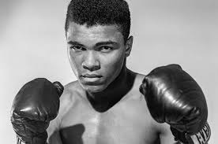
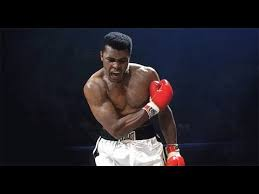

Welcome to the blog of Muhammad Ali
|

Muhammad Ali
Nama : Muhammad Ali Lahir: 17 Januari 1942, Louisville, Kentucky, Amerika Meninggal: 3 Juni 2016, Scottsdale, Arizona, Amerika Tinggi: 6 ft 3 in (191 cm) Nama panggilan: The Great; The Peoples Champ; The Lips Kalah: 5 Menang: 56 Pasangan: Lonnie Ali (m. 1986–2016), LAINNYA |

|